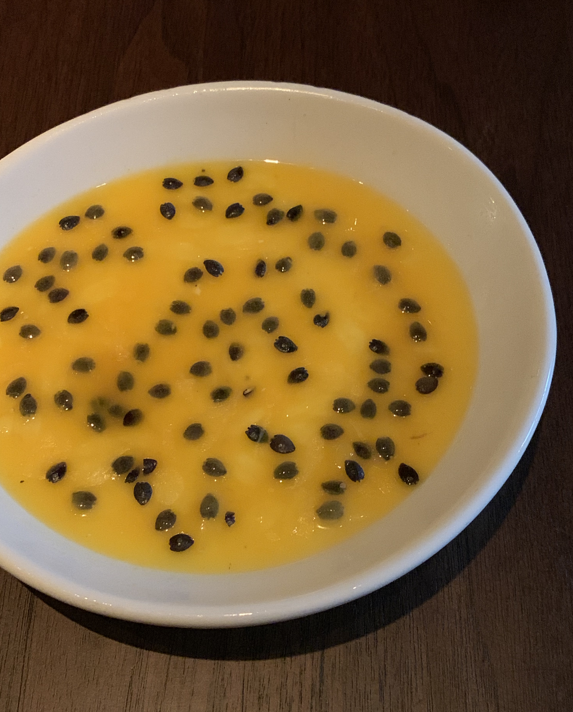
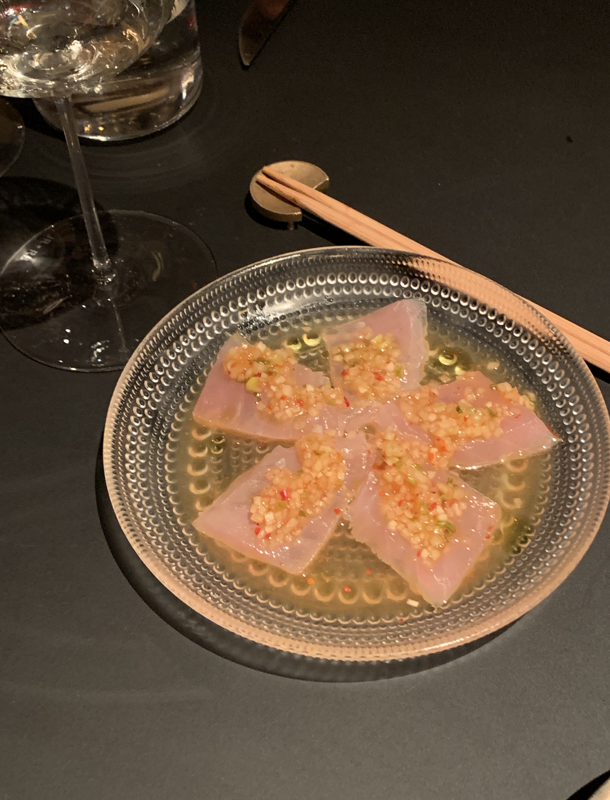
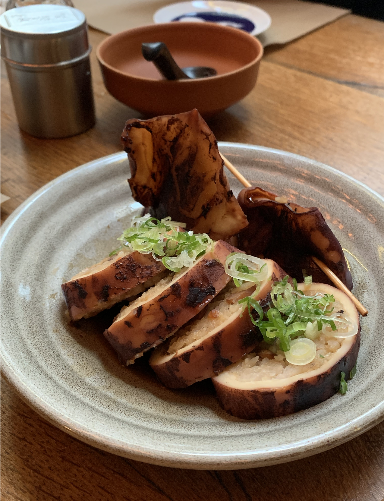

Restaurant: Liuyishou Hotpot
Time: 5:22 PM
Location: Boston

Restaurant: Wayan
Time: 6:57 PM
Location: Soho

Restaurant: Momofuku Kawi
Time: 9:20 PM
Location: West Village

Restaurant: Ipuddo
Time: 3:34 PM
Location: Midtown East

Restaurant: No No No
Time: 7:19 PM
Location: Midtown East